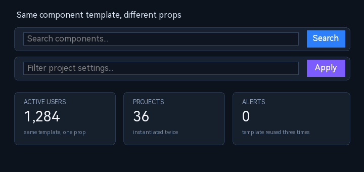

5.9 组件系统（Components）
组件是声明式布局层的可复用模板：在 components 中定义一次控件树，在 layouts/controls 中用自定义 type 实例化。组件不是运行期控件类型，而是在 LoadLayout 解析阶段展开为普通控件树；展开结果与手写布局使用同一套控件、属性、事件与布局引擎。
组件适合：重复的表单项、工具栏、卡片、带固定结构的业务小组件。若需要运行期动态增删/替换实例，仍以普通控件树和 C ABI/Binding 操作为主。

SearchBar 模板实例化两次（不同 placeholder/按钮文案/accent），同一份 StatCard 模板实例化三次（不同 title/value/note）；无需复制控件树。5.9.1 定义一个组件
{
"components": {
"SearchBar": {
"props": {
"placeholder": { "type": "string", "default": "Search..." },
"buttonText": { "type": "string", "default": "Go" }
},
"template": {
"type": "panel",
"layout": { "type": "h-flow", "gap": 4 },
"children": [
{ "type": "edit-box", "id": "search",
"rect": { "x": 0, "y": 0, "w": 220, "h": 30 },
"placeholder": "{{placeholder}}" },
{ "type": "button", "id": "go",
"rect": { "x": 0, "y": 0, "w": 64, "h": 30 },
"caption": "{{buttonText}}",
"events": { "onClick": "_comp_onSearch" } }
]
}
}
}
}props可选；每个字段必须有type，只支持string/number/bool；default可选。template必填且必须是对象，内容为普通控件 JSON（可以是容器、控件树、布局、事件、样式等）。- 组件名不能与内置控件类型同名（如
button/panel），否则会被内置类型优先解析。 - 模板可以引用另一个组件名；解析器会检测循环引用并诊断。
5.9.2 实例化
{
"layouts": [
{
"type": "SearchBar",
"id": "topSearch",
"placeholder": "输入关键词",
"buttonText": "搜索",
"rect": { "x": 20, "y": 20, "w": 300, "h": 40 }
}
]
}- 实例的
type写组件名；组件名之外的字段作为props值传入模板。 id/rect在模板展开后注入：实例根控件使用实例自己的 id/rect。enable/visible可覆盖实例根控件的对应标准属性。- 实例的
events只用于组件模板内_comp_事件的映射，不会作为模板普通事件展开；具体绑定写在模板中的控件条目上。
5.9.3 占位符规则
模板字符串中的 {{name}} 在实例化时替换：
- 取实例同名字段；没有则用
props.name.default；两者都没有时保留字面占位符并输出诊断。 - 整串单占位（trim 后恰为
{{name}}）保留值类型：number/bool/string 直接替换，适合数字尺寸、布尔开关等。 - 字符串中嵌入占位符时按字符串拼接；number 用数值文本、bool 为
true/false。 - 替换只扫描一遍，替换结果不会再次展开（避免递归/注入）；占位符名称两端空白会被 trim。
{
"type": "MyCard",
"gap": 8,
"title": "Settings",
"showHeader": true,
"rect": { "x": 0, "y": 0, "w": 320, "h": 200 }
}5.9.4 实例 id 与 FindControl
模板内的控件 id 会自动加实例前缀 <instanceId>__，避免多次实例化冲突：
template id: search
instance id: topSearch
result id: topSearch__search- 实例根控件保留实例 id（例如
topSearch），模板根 id 不叠加前缀。 - 未提供实例 id 时使用组件名前缀（
_comp_<ComponentName>）。 - 展开后可用
FindControl("topSearch")取实例根；内部子控件按topSearch__search查找。 - 实例内部 id 必须在同一实例内唯一；跨实例会因前缀自然隔离。
5.9.5 模板事件与实例映射
组件模板中的 handler 以 _comp_ 开头时，会在实例化时映射为实例 events 中的同名键（去掉前缀）：
"template": {
"type": "button",
"caption": "Search",
"events": { "onClick": "_comp_onSearch" }
}{
"type": "SearchBar",
"id": "topSearch",
"events": { "onSearch": "onTopSearch" }
}展开后按钮事件为 onTopSearch。实例未提供对应事件时，模板事件保持未映射并输出诊断；实例 events 中的键名不需要带 _comp_。
5.9.6 嵌套、顺序与限制
- 组件模板可以包含其他组件类型；所有组件定义先于布局解析注册，因此定义顺序不要求先声明后被引用。
- 递归引用（A→B→A）会被检测并拒绝，避免无限展开。
- 实例只注入
id/rect/enable/visible和模板 props；不能在实例上直接覆盖模板内部任意控件的属性。需要可变属性时，把它显式做成props并写入模板。 - 模板 id 总是加实例前缀；不要依赖“裸模板 id”在实例化后仍然不变。
- 组件实例本身没有独立运行期对象/API；它展开为普通控件树。需要运行期替换结构时，重新
LoadLayout或直接操作展开后的控件。 - 组件定义当前属于布局 JSON；不改变事件注册顺序：宿主的 action 仍应在
LoadLayout前注册。
5.9.7 诊断
- 组件名与内置控件类型冲突、缺少
template、props非对象、prop 缺少/非法type：加载时警告并跳过该定义。 - 循环引用：警告并拒绝该次实例化。
- 未提供且没有 default 的占位符：警告并保留
{{name}}字面量。 - 实例
_comp_事件没有对应实例事件：警告，事件不映射。 - 组件展开失败时按普通控件解析错误处理；布局整体加载结果以
LoadLayout/LoadLayoutFromFile返回值为准。
5.9.8 与布局/主题/设计器的关系
- 组件展开后就是普通控件树，主题选择器（类型/class/id）、布局引擎、焦点、事件、缩放均按普通控件工作。
- 主题可用实例 id 或展开后子控件 id 选择；跨实例复用样式时建议用 class，而不是裸模板 id。
- 设计器的组件模板/事件绑定属于设计器项目模型；导出为布局时仍遵循本页的 JSON 展开与
_comp_映射规则。
声明式语法速查中的组件小节也给出了最小示例，见 6.9 组件与实例化。